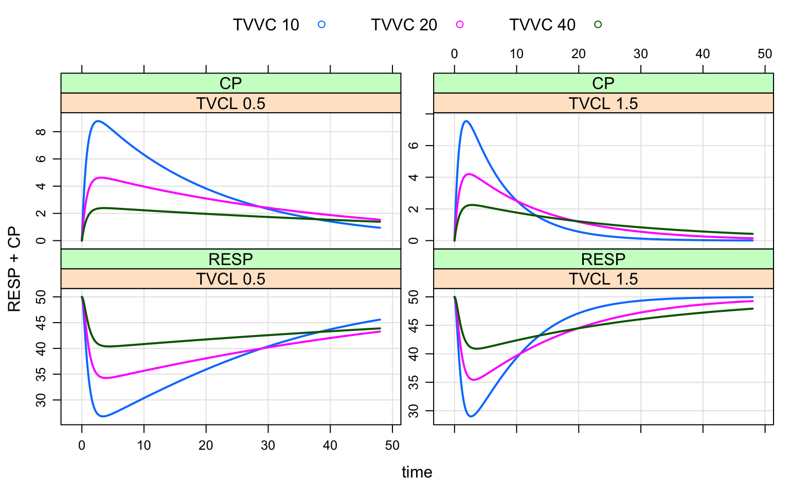

- Latest release: 0.7.7
- Get started with
mrgsolve - User Guide
- Installation guide
- Gallery
- Extended examples
- Slide decks
- Wiki
-
mrgsolvequestions and discussion (please use them … we welcome questions, comments, and issue reports)- Issue tracker (requires GitHub account; ok for questions or issue reports)
- Google Group (email list or web-based discussion)
Installation
Four primary options exist to install mrgsolve:
- The development version from github via:
devtools::install_github("metrumresearchgroup/mrgsolve")- Latest stable release directly from github via:
devtools::install_github("metrumresearchgroup/mrgsolve@v0.7.7")- The latest stable release can be installed with
install.packageslike this:
install.packages("mrgsolve",
repos=c(options()$repos,"https://mrgsolve.github.io/pkg"),
type="source")- Installation from source the source tar.gz file and all dependencies, as documented in the wiki
Note that installation from github will automatically install all dependencies, such RcppArmadillo.
About
mrgsolve facilitates simulation in R from hierarchical, ordinary differential equation (ODE) based models typically employed in drug development. The modeler creates a model specification file consisting of R and C++ code that is parsed, compiled, and dynamically loaded into the R session. Input data are passed in and simulated data are returned as R objects, so disk access is never required during the simulation cycle after compiling.
mrgsolve is open-source software distributed as a package for R
- Installs via
Rpackage compile and install system - Easy integration with any other relevant
Rfunctionality - Graphics:
lattice,ggplot2- Model estimation:
nls,nlme,MCMCpack,saemix, others - Optimal design:
PFIM,PopED - Data summary:
dplyrand many other functions and packages - Interactive model exploration with
shiny
- Model estimation:
library(mrgsolve)
library(dplyr)
library(ggplot2)The model specification file is similar to other non-linear mixed effects modeling software
code <- '
$GLOBAL
#define CP (CENT/VC)
#define INH (CP/(IC50+CP))
$SET delta=0.1
$PARAM TVCL=1, TVVC=20, KA = 1.3, KIN=100, KOUT=2, IC50=10
$CMT GUT, CENT, RESP
$MAIN
double CL = exp(log(TVCL) + ETA(1));
double VC = exp(log(TVVC) + ETA(2));
RESP_0 = KIN/KOUT;
$OMEGA 0 0
$ODE
dxdt_GUT = -KA*GUT;
dxdt_CENT = KA*GUT - (CL/VC)*CENT;
dxdt_RESP = KIN*(1-INH) - KOUT*RESP;
$CAPTURE CP
'The model is parsed, compiled, and dynamically loaded into the R session
- Information about the model is saved as an
Robject - Important model attributes can be updated in
Rwithout recompiling
mod <- mcode("demo", code)
Use mrgsolve as an interactive simulation tool for model exploration and sensitivity analyses
- Simulated data are returned as
Robjects - Input and output data are kept in memory in the
Rprocess; writing or reading to disk is never necessary (unless results are to be saved for later use).
. Model: demo.cpp
. Dim: 1202 x 6
. Time: 0 to 120
. ID: 1
. ID time GUT CENT RESP CP
. [1,] 1 0.0 0.00 0.00 50.00 0.000
. [2,] 1 0.0 100.00 0.00 50.00 0.000
. [3,] 1 0.1 87.81 12.16 49.72 0.608
. [4,] 1 0.2 77.11 22.78 49.03 1.139
. [5,] 1 0.3 67.71 32.04 48.11 1.602
. [6,] 1 0.4 59.45 40.11 47.06 2.006
. [7,] 1 0.5 52.20 47.14 45.96 2.357
. [8,] 1 0.6 45.84 53.25 44.87 2.663plot(out, CP+RESP~.)
out <-
mod %>%
ev(amt=100, ii=24, addl=2) %>%
Req(CP,RESP) %>%
knobs(TVVC=c(10,20,40), TVCL=c(0.5,1.5))plot(out, auto.key=list(columns=3))
Flexibility with input data sets
- Data set format that is likely familiar to modeling and simulation scientists
- No need to include observation records;
mrgsolvewill automatically insert
.data <-
expand.ev(ID=1:10, amt=c(100,300,1000)) %>%
mutate(dose=amt)
head(.data). ID amt evid cmt time dose
. 1 1 100 1 1 0 100
. 2 2 100 1 1 0 100
. 3 3 100 1 1 0 100
. 4 4 100 1 1 0 100
. 5 5 100 1 1 0 100
. 6 6 100 1 1 0 100
Input data are passed in as R objects
- Pass many different data sets or implement different designs in the same model code without recompiling
- Control simulation output from
Rto better manage memory
out <-
mod %>%
data_set(.data) %>%
Req(RESP,CP) %>% obsonly %>%
carry.out(dose) %>%
mrgsim(end=48, seed=1010)plot(out, RESP~time|factor(dose), scales="same")
Pass simulated output to your favorite data summary or visualization routines
Summarise with dplyr
out %>%
as.tbl %>%
group_by(dose) %>%
summarise(rmin = min(RESP), tmim=time[which.min(RESP)]). # A tibble: 3 × 3
. dose rmin tmim
. <dbl> <dbl> <dbl>
. 1 100 18.958869 2.9
. 2 300 16.117261 3.5
. 3 1000 6.198648 3.5Plot with ggplot2
out %>%
as.tbl %>%
ggplot(data=.) +
geom_line(aes(x=time, y=RESP, group=ID, col=factor(dose)))